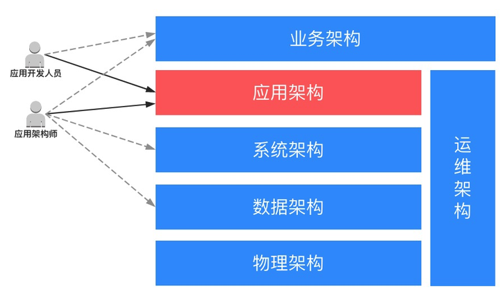

<!DOCTYPE html>
<html lang class="loading">
<head><meta name="generator" content="Hexo 3.8.0">
    <meta charset="UTF-8">
    <meta http-equiv="X-UA-Compatible" content="IE=edge,chrome=1">
    <meta name="viewport" content="width=device-width, minimum-scale=1.0, maximum-scale=1.0, user-scalable=no">
    <title>浅谈技术架构 - Linco</title>
    <meta name="apple-mobile-web-app-capable" content="yes">
    <meta name="apple-mobile-web-app-status-bar-style" content="black-translucent">
    <meta name="google" content="notranslate">
    <meta name="keywords" content="Linco, Blog,"> 
    <meta name="description" content="一. 架构的分类软件项目架构没有明确的分类标准, 和网络的分层类似, 各种分类的方式大同小异, 无非就是把相邻的层级拆分或合并, 阿里云提供的架构分类是这样的

这里关注的技术架构在图中称为系统架构,"> 
    <meta name="author" content="Linco"> 
    <link rel="alternative" href="atom.xml" title="Linco" type="application/atom+xml"> 
    <link rel="icon" href="/img/icon.png"> 
    <link rel="stylesheet" href="//cdn.jsdelivr.net/npm/gitalk@1/dist/gitalk.css">
    <link rel="stylesheet" href="/css/diaspora.css">

</head>
</html>
<body class="loading">
    <span id="config-title" style="display:none">Linco</span>
    <div id="loader"></div>
    <div id="single">
    <div id="top" style="display: block;">
    <div class="bar" style="width: 0;"></div>
    <a class="icon-home image-icon" href="javascript:;" data-url></a>
    <div title="播放/暂停" class="icon-play"></div>
    <h3 class="subtitle">浅谈技术架构</h3>
    <div class="social">
        <!--<div class="like-icon">-->
            <!--<a href="javascript:;" class="likeThis active"><span class="icon-like"></span><span class="count">76</span></a>-->
        <!--</div>-->
        <div>
            <div class="share">
                <a title="获取二维码" class="icon-scan" href="javascript:;"></a>
            </div>
            <div id="qr"></div>
        </div>
    </div>
    <div class="scrollbar"></div>
</div>

    <div class="section">
        <div class="article">
    <div class="main">
        <h1 class="title">浅谈技术架构</h1>
        <div class="stuff">
            <span>十一月 08, 2021</span>
            

        </div>
        <div class="content markdown">
            <h3 id="一-架构的分类"><a href="#一-架构的分类" class="headerlink" title="一. 架构的分类"></a>一. 架构的分类</h3><p>软件项目架构没有明确的分类标准, 和网络的分层类似, 各种分类的方式大同小异, 无非就是把相邻的层级拆分或合并, 阿里云提供的架构分类是这样的</p>
<p></p>
<p>这里关注的技术架构在图中称为系统架构</p>
<p>​    </p>
<h3 id="二-技术架构的意义"><a href="#二-技术架构的意义" class="headerlink" title="二. 技术架构的意义"></a>二. 技术架构的意义</h3><p>软件项目的三个目标: 稳定, 拓展, 成本控制</p>
<p>保持已有功能稳定, 不断迭代新功能, 控制这个过程的时间和资源成本</p>
<p>​    </p>
<h3 id="三-谁应该掌握技术架构能力"><a href="#三-谁应该掌握技术架构能力" class="headerlink" title="三. 谁应该掌握技术架构能力"></a>三. 谁应该掌握技术架构能力</h3><p>架构师必须熟知</p>
<p>高级开发人员需要掌握</p>
<p>初中级开发建议了解并实践</p>
<p>​    </p>
<h3 id="四-理想的架构"><a href="#四-理想的架构" class="headerlink" title="四. 理想的架构"></a>四. 理想的架构</h3><h5 id="底层稳定"><a href="#底层稳定" class="headerlink" title="底层稳定"></a>底层稳定</h5><p>​    框架服务自身能长期稳定运行</p>
<p>​    内存管控</p>
<p>​        实例对象&amp;组件的复用与隔离, 内存泄漏风险</p>
<p>​    数据量控制</p>
<p>​        并发量, 日志信息, 数据流动量, 文件传输</p>
<h5 id="容错性"><a href="#容错性" class="headerlink" title="容错性"></a>容错性</h5><p>正确答案只有一种, 而错误答案有无数种</p>
<p>预校验, 统一错误处理, 最小损伤(如web容器)</p>
<p>防御式编程</p>
<h5 id="高效"><a href="#高效" class="headerlink" title="高效"></a>高效</h5><p>​    涵盖时间和空间</p>
<p>​    缓存合理利用</p>
<h5 id="开发友好"><a href="#开发友好" class="headerlink" title="开发友好"></a>开发友好</h5><p>​    – 模式化, 示例</p>
<h5 id="问题跟踪"><a href="#问题跟踪" class="headerlink" title="问题跟踪"></a>问题跟踪</h5><p>​    日志组成,接口信息日志, 异常处理</p>
<h5 id="分层"><a href="#分层" class="headerlink" title="分层"></a>分层</h5><p>​    唯一数据通道</p>
<h5 id="公共能力抽象"><a href="#公共能力抽象" class="headerlink" title="公共能力抽象"></a>公共能力抽象</h5><p>RPC</p>
<p>​    rpc能力,重试和熔断</p>
<p>中间件</p>
<p>​    – 组件实现+封装简化</p>
<p>一致性</p>
<p>热更新</p>
<p>​    – 配置和功能模块</p>
<p>信息获取能力</p>
<p>以及由组件完成的如日志能力, 序列化能力, 权限控制, , 数据分页, 异步调度能力, 预校验能力, 测试能力, 错误响应能力等, 其中部分需要结合系统实现做二次封装</p>
<h5 id="组件化"><a href="#组件化" class="headerlink" title="组件化"></a>组件化</h5><p>抽离多模块共同的功能和数据集</p>
<h5 id="易变更"><a href="#易变更" class="headerlink" title="易变更"></a>易变更</h5><p>减少遇到变更时需要修改的地点, 避免漏改错改, 通过分层, 组件化控制实现, 但更多还是依赖于业务编码的解耦</p>
<p>自动化编码也有助于一些场景下提升可维护性</p>
<h5 id="自动化编码"><a href="#自动化编码" class="headerlink" title="自动化编码"></a>自动化编码</h5><p>提供配套的代码生成器, 业务无关的代码都由生成器产生, 常规的业务操作也可以抽象出业务无关的层次</p>
<h5 id="可拓展"><a href="#可拓展" class="headerlink" title="可拓展"></a>可拓展</h5><p>方便连接其他服务, 接入中间件</p>
<h5 id="横向扩容"><a href="#横向扩容" class="headerlink" title="横向扩容"></a>横向扩容</h5><p>支援下层技术架构的横向扩容能力, 不能向业务架构提供妨碍技术架构横向扩容的实现方案</p>
<h5 id="通用性"><a href="#通用性" class="headerlink" title="通用性"></a>通用性</h5><p>技术架构应该是和业务无关的, 稍加修饰或拓展就能适用于其他技术架构差异不大的项目上, 甚至技术架构经常用于指导技术架构的选型和部署</p>
<p>​    </p>
<h3 id="五-总结"><a href="#五-总结" class="headerlink" title="五. 总结"></a>五. 总结</h3><p>技术架构不是一步到位的, 即使最优秀的技术架构师设计出来的架构, 也要随着业务的发展变化不断调整. 更别提大多数架构师并不专研于技术架构侧, 对技术组件的了解也并非全知全能, 高级开发对于某些特定技术的理解高于架构师的情况遍地皆是</p>
<p>对于自营项目的企业, 技术架构的维护应该贯穿于项目迭代的过程, 架构师也应该积极听取一线研发人员的技术意见. 适时安排时间进行架构维护, 放开约束让研发人员参与技术架构维护, 让项目的架构与时俱进</p>
<p>技术架构的优势能得到实现, 维持和增强, 团队, 企业和每个员工都会从中获益.</p>

            <!--[if lt IE 9]><script>document.createElement('audio');</script><![endif]-->
            <audio id="audio" loop="1" preload="auto" controls="controls" data-autoplay="true">
                <source type="audio/mpeg" src="/music/default_bgm.mp3">
            </audio>
            
        </div>
        
    <div id="gitalk-container" class="comment link" data-ae="false" data-ci="978518cc439cd352dd0b" data-cs="2d89825e7db6df72d065714d6b4ac1ce1829b14e" data-r="LincoXiaoQ.github.io" data-o="LincoXiaoQ" data-a="LincoXiaoQ" data-d="false">查看评论</div>


    </div>
    
</div>


    </div>
</div>
</body>
<script src="//cdn.jsdelivr.net/npm/gitalk@1/dist/gitalk.min.js"></script>
<script src="//lib.baomitu.com/jquery/1.8.3/jquery.min.js"></script>
<script src="/js/plugin.js"></script>
<script src="/js/diaspora.js"></script>
<link rel="stylesheet" href="/photoswipe/photoswipe.css">
<link rel="stylesheet" href="/photoswipe/default-skin/default-skin.css">
<script src="/photoswipe/photoswipe.min.js"></script>
<script src="/photoswipe/photoswipe-ui-default.min.js"></script>

<!-- Root element of PhotoSwipe. Must have class pswp. -->
<div class="pswp" tabindex="-1" role="dialog" aria-hidden="true">
    <!-- Background of PhotoSwipe. 
         It's a separate element as animating opacity is faster than rgba(). -->
    <div class="pswp__bg"></div>
    <!-- Slides wrapper with overflow:hidden. -->
    <div class="pswp__scroll-wrap">
        <!-- Container that holds slides. 
            PhotoSwipe keeps only 3 of them in the DOM to save memory.
            Don't modify these 3 pswp__item elements, data is added later on. -->
        <div class="pswp__container">
            <div class="pswp__item"></div>
            <div class="pswp__item"></div>
            <div class="pswp__item"></div>
        </div>
        <!-- Default (PhotoSwipeUI_Default) interface on top of sliding area. Can be changed. -->
        <div class="pswp__ui pswp__ui--hidden">
            <div class="pswp__top-bar">
                <!--  Controls are self-explanatory. Order can be changed. -->
                <div class="pswp__counter"></div>
                <button class="pswp__button pswp__button--close" title="Close (Esc)"></button>
                <button class="pswp__button pswp__button--share" title="Share"></button>
                <button class="pswp__button pswp__button--fs" title="Toggle fullscreen"></button>
                <button class="pswp__button pswp__button--zoom" title="Zoom in/out"></button>
                <!-- Preloader demo http://codepen.io/dimsemenov/pen/yyBWoR -->
                <!-- element will get class pswp__preloader--active when preloader is running -->
                <div class="pswp__preloader">
                    <div class="pswp__preloader__icn">
                      <div class="pswp__preloader__cut">
                        <div class="pswp__preloader__donut"></div>
                      </div>
                    </div>
                </div>
            </div>
            <div class="pswp__share-modal pswp__share-modal--hidden pswp__single-tap">
                <div class="pswp__share-tooltip"></div> 
            </div>
            <button class="pswp__button pswp__button--arrow--left" title="Previous (arrow left)">
            </button>
            <button class="pswp__button pswp__button--arrow--right" title="Next (arrow right)">
            </button>
            <div class="pswp__caption">
                <div class="pswp__caption__center"></div>
            </div>
        </div>
    </div>
</div>


</html>
